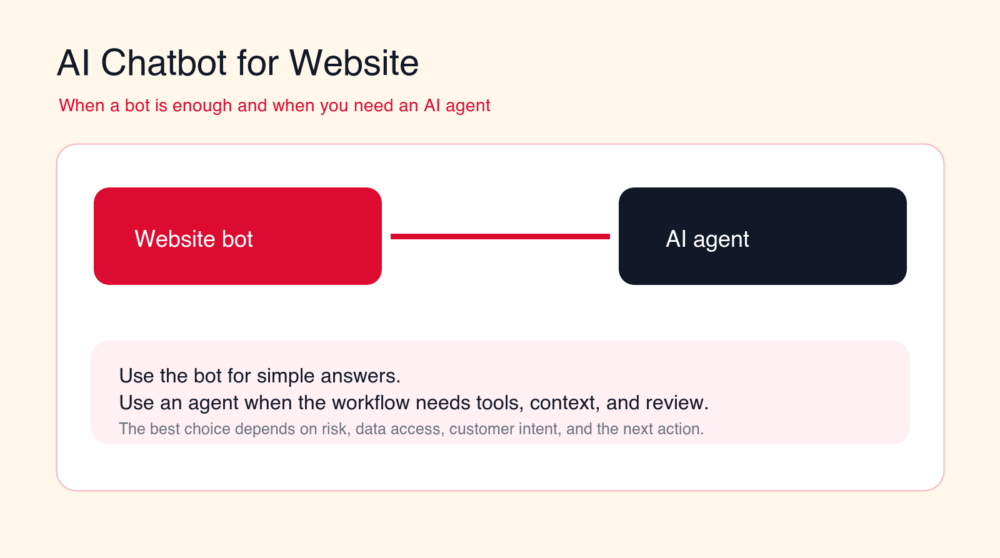
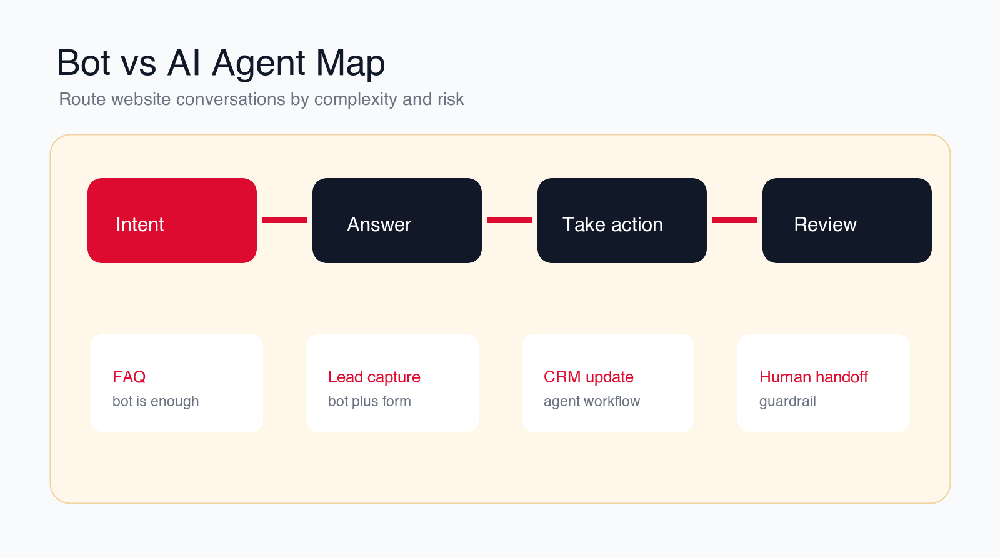
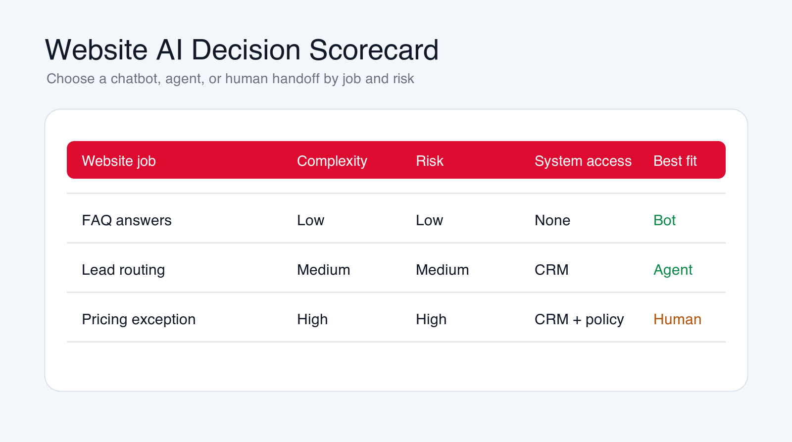

AI Chatbot for Website: When a Bot Is Enough and When You Need an AI Agent
An AI chatbot for website visitors can answer common questions, capture leads, and reduce basic support load. You need an AI agent when the conversation must use tools, check business context, update systems, or route work with human review.

Best first pilot
Start with website FAQ, lead capture, or support triage before giving an AI agent system access.
Focus
AI chatbot for website
Best for
Buyer guide
Best first workflow
FAQ and lead capture
Main service
AI Agent Development
TL;DR
A simple AI chatbot for website visitors is enough when the job is answering common questions, explaining services, collecting contact details, qualifying basic intent, showing links, or routing someone to a form. You need an AI agent when the workflow must check customer context, use tools, book appointments, update CRM records, open tickets, compare options, prepare quotes, trigger follow-up, or escalate based on business rules. The safest first rollout starts with a narrow website bot, measures conversation quality, adds human handoff, and only gives an AI agent system access after the rules, permissions, and review paths are clear.
Free website AI check
Find out whether you need a chatbot or an AI agent.
Drop your email and we will send a first-pass recommendation for the safest website AI workflow to build first.
No spam. We use this to reply with the recommendation.
An AI chatbot for website visitors can be a useful first step into AI automation. It can answer common questions, explain services, capture leads, reduce repetitive support conversations, and help visitors find the right page faster. For many companies, that is enough. The website does not need an autonomous system. It needs a clear, helpful assistant that answers well and hands off when the conversation becomes specific.
The problem starts when a chatbot is expected to do agent work. A visitor asks whether they qualify for a service. A prospect wants a custom quote. A customer asks about an order. A user needs account-specific support. A buyer wants to book a meeting based on territory rules. A lead needs to be routed to the right CRM owner. A support issue needs a ticket, priority, and escalation reason. At that point, the conversation is no longer just a chat. It is a workflow.
A website chatbot and an AI agent can look similar to the visitor because both may appear as a chat window. Underneath, they are different systems. A bot usually answers from approved knowledge, asks simple questions, and collects information. An AI agent can reason over context, use tools, call systems, draft actions, update records, and trigger workflows under guardrails.
This guide explains when a simple bot is enough, when you need an AI agent, and how to choose a rollout path that protects customer experience. It is written for business owners, marketing teams, sales leaders, support teams, SaaS companies, agencies, local service businesses, and B2B operators who want useful website AI without creating customer confusion.
Quick Answer: Use a Bot for Answers, an Agent for Workflows
Use an AI chatbot for website conversations when the visitor mostly needs information. That includes common questions, service explanations, pricing guidance that is already public, office hours, locations, product pages, content recommendations, lead capture, newsletter signup, and basic qualification questions.
Use an AI agent when the visitor needs the system to take a controlled action. That includes booking, CRM updates, ticket creation, lead scoring, account lookup, document intake, quote preparation, order status checks, routing by territory, escalation, or follow-up based on the conversation.
The simplest decision rule is this: if the website AI only needs to answer and collect, a bot may be enough. If it must decide, act, update, route, or use private business data, treat it as an AI agent project with permissions, review, and audit trails.
| Website job | Bot is enough when | AI agent needed when | Best control |
|---|---|---|---|
| FAQ | The answer is public, stable, and easy to cite. | The answer depends on account context or policy interpretation. | Use approved knowledge and source links. |
| Lead capture | The bot collects name, email, company, and need. | The workflow must score, enrich, and route the lead. | Review routing and CRM writes first. |
| Booking | The bot sends the visitor to a booking link. | The system must choose appointment type, owner, and rules. | Limit calendar access and allowed actions. |
| Support | The bot shares help articles and collects issue details. | The workflow must create tickets, check account data, or escalate. | Use severity rules and human handoff. |
What an AI Website Chatbot Actually Does
An AI website chatbot is a conversational interface that helps visitors get answers or complete simple steps on a website. It may use a knowledge base, page content, scripted flows, forms, basic qualification questions, and simple routing rules. Its job is to make the website easier to use.
A good website chatbot can answer questions about services, pricing ranges, product features, delivery areas, appointment options, support policies, content, and next steps. It can ask visitors what they need, recommend pages, collect contact details, and hand off to a form or human team.
The best simple bot is narrow and honest. It does not pretend to know private account data. It does not invent pricing. It does not promise timelines. It does not decide whether someone qualifies for a service unless the rules are public and simple. It answers from approved material and makes the next step easier.
Many businesses should start here. A useful bot can reduce repetitive questions, improve conversion paths, and show which website content is unclear. It can also generate conversation data that helps the team decide whether an AI agent is worth building later.
What an AI Agent Does Differently
An AI agent is a workflow system that can use context, tools, rules, and integrations to complete controlled tasks. It may read the conversation, check the CRM, search internal knowledge, create a ticket, draft a reply, update a record, route a lead, book a meeting, or prepare a handoff packet.
The word "agent" should not mean the AI can do anything it wants. A business-ready AI agent needs a defined job, approved tools, permission limits, stop rules, review paths, and logs. The agent should know what it can answer, what it can suggest, what it can update, and when it must ask a human.
The difference is action. A chatbot may say, "You can book a consultation on this page." An AI agent may ask the visitor's need, check service fit, choose the right meeting type, look up availability, create a CRM record, draft a summary for the sales owner, and send the visitor to the right booking path.
That power creates risk. If an agent uses the wrong rules, writes the wrong CRM field, creates duplicate tickets, or gives a visitor a false expectation, the business has a real workflow problem. That is why agent projects need more design than website chatbot installs.

When a Simple Website Bot Is Enough
A simple bot is enough when the conversation is low-risk, public, repeatable, and easy to correct. The visitor needs help navigating information, not a system that makes decisions. In these cases, speed and clarity matter more than tool access.
The first good use case is FAQ support. If visitors repeatedly ask what you do, who you serve, how pricing works at a high level, what happens after a call, where you operate, or how to contact support, a website bot can answer from approved content and link to the right page.
The second use case is lead capture. A bot can ask who the visitor is, what they need, company size, timeline, budget signal, and preferred contact method. It can then send the information to a form or notify the team. If routing is simple, this may not require an agent.
The third use case is page guidance. Visitors often land on the wrong page. A bot can ask whether they need AI automation, AI consulting services, AI agent development, or custom AI solutions for businesses, then point them to the right service page.
The fourth use case is basic support intake. A bot can collect a description of the issue, ask for contact information, suggest help articles, and explain when the team will reply. If it does not need account lookup or ticket creation, a bot may be sufficient.
The fifth use case is content recommendation. If a visitor is researching a topic, the bot can point them to practical blog posts, checklists, or service pages. This is useful for early-stage buyers who are not ready to talk yet.
When You Need an AI Agent Instead
You need an AI agent when the website conversation must become a business workflow. That usually means the system needs data access, tool use, routing logic, decision rules, or human review. The visitor is no longer only asking a question. They are asking the business to do something.
Lead routing is a common example. A simple bot can collect a lead. An AI agent can classify the lead, enrich the company, check territory rules, score urgency, create or update the CRM record, assign an owner, and prepare a first follow-up draft. That requires more guardrails than a website FAQ bot.
Support is another example. A simple bot can suggest help content. An AI agent can check the customer's account, summarize the issue, classify severity, create a ticket, attach conversation context, and escalate urgent cases. That workflow needs clear stop rules and access controls.
Booking can also require an agent. Sending someone to a booking page is simple. Choosing the right appointment type, checking availability, verifying service area, matching the visitor to the right expert, and creating a CRM note is a workflow.
Pricing and quote conversations often require an agent or human handoff. If the price depends on scope, usage, contract terms, integrations, compliance, or custom work, the website AI should collect information and prepare a handoff. It should not invent a quote.
The moment the AI needs to update systems, read private data, trigger follow-up, or make a recommendation that affects the customer relationship, treat it as an agent workflow.
12 Website AI Workflows to Consider First
The right starting point depends on your site traffic, customer questions, sales process, support load, and risk tolerance. These 12 workflows show where a bot is enough, where an AI agent may be useful, and where human review should stay in control.
1. FAQ and Product Fit Questions
FAQ is the safest first workflow. The bot answers common questions from approved pages and gives visitors links to learn more. It can explain what the company does, what services exist, who the service is for, how the process works, and what the visitor should do next.
This is usually a bot workflow, not an agent workflow. The bot should cite or link to source pages and hand off when the visitor asks for a specific promise, exception, or custom recommendation.
2. Lead Capture and Basic Qualification
A website chatbot can ask qualification questions that make forms easier to complete. It can capture name, email, company, role, problem, timeline, service interest, and preferred contact method. This reduces friction when the visitor is unsure which form to use.
If the workflow only sends the lead to a team inbox, a bot may be enough. If it scores the lead, enriches the company, updates CRM fields, or routes to a specific owner, it should be designed as an AI agent workflow.
3. Service Recommendation
Many visitors do not know whether they need consulting, automation, agent development, or custom AI solutions. A bot can ask a few questions and recommend the right service page. This is helpful when the recommendation is based on simple, public rules.
Use an AI agent when the recommendation depends on internal context, budget, tool stack, compliance needs, data access, or workflow risk. The agent can prepare a recommendation for review rather than acting like a final consultant.
4. Booking and Meeting Routing
A simple bot can point visitors to a booking link or ask whether they want to schedule a call. That may be enough for small teams with one calendar and one meeting type.
Use an AI agent when booking depends on location, service fit, account owner, language, deal size, calendar rules, or support severity. The agent should only book approved meeting types and should log the reason for the booking.
5. Support Triage
Support triage starts with collecting the issue clearly. A bot can ask for the product, problem, urgency, account email, and screenshots. It can suggest public help articles and explain the next step.
An AI agent becomes useful when the support workflow needs account lookup, ticket creation, severity classification, internal routing, or escalation. That workflow needs guardrails because frustrated customers should not get trapped in a bad conversation.
6. Order, Account, or Request Status
Status questions are tempting to automate because they are repetitive. A website bot can explain where to check status or collect information for a callback. It should not reveal private information without verification.
An AI agent can answer status questions when it has approved access to reliable systems and identity checks. Start with low-risk status information before expanding to anything sensitive.
7. Pricing, Scope, and Quote Intake
A bot can explain public pricing ranges, packages, or how quotes are prepared. It can collect scope details and send them to the team. That is often enough for early-stage visitors.
Do not let a website AI invent custom pricing. If pricing depends on scope, integrations, volume, risk, contract terms, or approval, use the AI to prepare a quote intake packet and route it to a person.
8. Technical Troubleshooting
A bot can guide visitors through public troubleshooting steps and link to help content. This works when the steps are safe, general, and easy to verify.
An AI agent may be needed when troubleshooting requires logs, account configuration, product state, or internal tools. The agent should avoid destructive actions and escalate when confidence is low.
9. Website Knowledge Search
Many websites have useful pages that visitors cannot find. A bot can act as a guided search layer, summarizing relevant content and linking to the source. This is a strong low-risk use case.
The key guardrail is citation. The bot should show where the answer came from. If the answer cannot be grounded in approved website content, it should say that and offer a human handoff.
10. CRM Updates and Lead Routing
CRM updates are agent work. The AI may need to create a lead, update company fields, assign an owner, write a conversation summary, and trigger follow-up. That is valuable, but it creates data quality risk.
Start with suggested updates or limited fields. Record the source conversation, avoid duplicate records, and review routing logic before giving the agent broad write access.
11. Human Handoff and Escalation
Handoff is not a backup feature. It is a core part of safe website AI. The system should know when the visitor is upset, confused, high-value, urgent, or asking for something outside scope.
A good handoff includes the conversation summary, visitor details, requested outcome, urgency, attempted answers, and reason for escalation. The human should not have to ask the visitor to repeat everything.
12. Conversation Quality Reporting
Website AI should teach the business what visitors do not understand. Track unanswered questions, repeated confusion, failed handoffs, low-rated answers, missing content, lead quality, and conversion paths.
This reporting helps improve the website, not only the bot. If visitors keep asking the same question, the page may need clearer copy. If leads ask for a service you do not explain well, the service page may need repair.
Build a controlled website AI pilot
Want a chatbot that does not become a dead-end widget?
We can map your website conversations, decide where a bot is enough, and design AI agent workflows where tool use and handoff matter.
We will reply with a practical first-workflow recommendation.
Website AI Risks to Control
The first risk is wrong answers. A website bot can damage trust if it invents policies, pricing, timelines, availability, or service promises. Every answer should come from approved content or a defined workflow. If the source is missing, the bot should say so.
The second risk is poor handoff. Visitors become frustrated when the AI keeps asking questions after it is clearly outside scope. Handoff rules should include explicit requests for a person, repeated failed answers, negative sentiment, urgent support, custom pricing, account-specific questions, and sensitive topics.
The third risk is privacy. Website conversations may include personal data, business details, account questions, health information, legal questions, financial information, or confidential project details. The system needs clear disclosure, retention rules, access controls, and data minimization.
For EU-facing sites, treat AI disclosure as a launch requirement. The EU AI Act Article 50 transparency obligations apply from August 2, 2026 and generally require people to be told when they are interacting directly with an AI system unless that is already obvious. Use a visible disclosure, a privacy link, and a clear human handoff instead of making the bot look like an unnamed staff member.
The fourth risk is tool misuse. An AI agent that can update CRM, create tickets, book meetings, or send emails needs strict permissions. Tool access should be narrow, logged, and tested with real edge cases before expansion.
The fifth risk is measuring the wrong thing. A high chat volume does not mean success. A long conversation does not mean value. Measure successful answers, qualified leads, handoff quality, visitor satisfaction, conversion movement, and the number of conversations that create useful next steps.

Guardrails That Make Website AI Safe
Start with approved knowledge. The bot should answer from reviewed website pages, service descriptions, support articles, policy pages, and approved sales language. Do not let it improvise business commitments.
Define scope by job. A FAQ bot answers questions. A lead bot collects details. A support triage bot gathers issue information. An AI agent books, routes, updates, or creates records. Mixing all of those jobs into one vague assistant makes testing harder.
Use source links and citations where possible. Visitors and staff should be able to verify why the bot answered a certain way. Source grounding also shows the business which website pages need improvement.
Keep human review for sensitive actions. Pricing exceptions, contract terms, refunds, legal or medical topics, complaints, account access, high-value leads, and system writes should be reviewed until the workflow is proven.
Log decisions and handoffs. A production workflow should record what the visitor asked, what the AI answered, what source was used, when the conversation escalated, what system action was suggested or taken, and who owns follow-up.
A Practical 90-Day Website AI Implementation Plan
In the first thirty days, map website conversation intent. Review contact forms, live chat logs, sales notes, support tickets, analytics, search queries, and common questions. Group conversations into low-risk answers, lead capture, support triage, booking, account-specific questions, custom pricing, and human escalation.
Choose the first workflow. Most businesses should start with FAQ plus lead capture or support triage. Define the knowledge sources, allowed answers, qualification questions, handoff rules, and metrics. Decide whether this first version is a bot, a bot plus forms, or a controlled AI agent.
In days thirty to sixty, build and test the pilot. Write approved answer rules, connect the knowledge base, design the conversation flow, add forms, test mobile behavior, define handoff messages, and review edge cases. If an AI agent is involved, connect only the minimum tools needed.
In days sixty to ninety, launch to a limited traffic path. Measure answer quality, lead quality, handoff completeness, failed questions, visitor satisfaction, and staff feedback. Expand only when the system answers reliably and the team trusts the handoff.
The Minimum Useful Website AI Pilot
The minimum useful pilot answers approved questions, captures visitor intent, collects contact details, recommends the right next page or form, and hands off cleanly when the request is outside scope. That is enough to prove value before building an agent with system access.
What to Avoid in the First Build
Avoid broad autonomous agents, automatic quotes, account-specific answers without verification, hidden CRM writes, unsupported claims, and chat experiences that trap visitors. Also avoid launching on every page before you understand which conversations the system handles well.
Questions to Answer Before Launch
- Which website conversation is the pilot responsible for?
- Which answers are approved, and which require human handoff?
- Which data can be collected, stored, or passed to the team?
- Which systems can the AI read or update?
- What counts as a successful conversation?
- How will failed answers, complaints, and handoff quality be reviewed?
How to Measure Whether the Bot or Agent Is Working
Measure website AI by outcome quality, not novelty. Useful metrics include successful answer rate, unsupported question rate, handoff rate, handoff completeness, lead capture rate, qualified lead rate, booking completion, support intake completeness, response speed, visitor rating, and staff acceptance.
Review conversation transcripts. Look for repeated confusion, weak answers, overlong conversations, failed escalation, missing source links, and visitor questions that reveal content gaps. The transcript review should improve both the AI and the website.
Track what happens after the chat. Did the lead convert? Did the support team receive enough detail? Did the visitor book the right meeting? Did the human owner understand the handoff? A chat that looks successful in the widget may still fail if the next team receives poor context.
If the bot performs well on simple answers but fails on workflow tasks, that is a signal to add an AI agent for a narrow path. If the agent creates too many corrections or bad handoffs, reduce scope and strengthen review.
A Simple Decision Framework: Bot, Agent, or Human
Use three filters before choosing the technology: complexity, risk, and system access. Complexity asks whether the visitor needs a simple answer or a multi-step workflow. Risk asks what happens if the answer is wrong. System access asks whether the AI needs to read or update private tools such as CRM, help desk, calendar, billing, project management, or account databases.
If complexity is low, risk is low, and system access is not needed, use a chatbot. A visitor asking what services you offer, where to find a case intake form, how to contact the team, or what happens after booking a call does not need an agent. The right answer is a clear bot with approved knowledge and good handoff.
If complexity is medium, risk is medium, and system access is limited, use a controlled AI agent. A visitor who needs lead routing, appointment type selection, ticket creation, CRM enrichment, or support triage needs more than a content answer. The agent can prepare and route work, but the workflow should still limit what it can change.
If complexity is high, risk is high, or the topic requires judgment, use human handoff with AI preparation. Custom pricing, legal questions, medical claims, complaints, refunds, contract exceptions, enterprise deal terms, and urgent account issues should not be fully automated from a public website chat. The AI can collect context and summarize the request, but a person should own the decision.
This framework also helps avoid overbuying. Many teams ask for an AI agent when they actually need better website content and a simple lead bot. Other teams install a chatbot when they really need a workflow connected to CRM, support, and booking. The decision should follow the job, not the label on the software.
The best production setup often combines all three paths. The bot handles public answers. The agent handles approved workflows. Humans handle exceptions. Visitors should not need to know which path is active. They should simply get a clear answer, a useful next step, or a clean handoff.
When to Hire an AI Automation Agency
You may not need an agency for a basic FAQ bot. Many website tools can handle simple answers, forms, and page recommendations. An AI automation agency becomes useful when the website AI needs workflow design, CRM integration, ticket creation, booking rules, custom knowledge retrieval, human review, reporting, or agent development.
A good agency should ask what job the website AI is responsible for before recommending tools. It should help decide where a bot is enough, where an AI agent is justified, what data can be accessed, what actions require approval, and how the rollout will be measured.
The agency should also protect the business from overbuilding. Sometimes the right first step is a better FAQ bot and a cleaner contact form. Sometimes the right step is an AI agent that connects chat to CRM and support. The correct answer depends on visitor intent, workflow complexity, and operational risk.
Final Checklist: Choose the Right Website AI
- Use a simple bot for public, low-risk answers and basic lead capture.
- Use an AI agent when the workflow needs tools, CRM, tickets, booking, routing, or account context.
- Keep humans involved for pricing exceptions, complaints, sensitive topics, and high-impact decisions.
- Use approved knowledge, source links, handoff rules, and data retention controls.
- Measure answer quality, lead quality, handoff completeness, and staff trust.
- Expand from bot to agent only after the first workflow is reliable.
An AI chatbot for website visitors should make the site easier to use. It should answer simple questions, capture intent, and route people to the right next step. It should not pretend to be a full business process.
An AI agent is the right choice when the website conversation needs to become controlled work: a CRM update, a support ticket, a booking, a quote intake, a handoff, or a follow-up workflow. Build that agent carefully, with clear permissions and review.
Free website AI review
Get a first-pass recommendation for your website AI workflow.
Send your email and we will reply with a practical view of whether your site needs a chatbot, an AI agent, or a human handoff workflow first.
No spam. We use this to reply with the recommendation.
FAQ: AI Chatbot for Website
What is an AI chatbot for website visitors?
An AI chatbot for website visitors is a conversational assistant that answers approved questions, recommends pages, captures lead details, and routes visitors to the right next step.
When is a simple website chatbot enough?
A simple chatbot is enough when the job is public, low-risk, and informational, such as FAQ answers, service explanation, lead capture, page guidance, or basic support intake.
When do I need an AI agent instead of a chatbot?
You need an AI agent when the website conversation must use tools, check account or CRM context, book meetings, create tickets, update systems, route leads, or prepare a reviewed workflow handoff.
Should a website AI chatbot give prices?
It can explain public pricing or pricing process, but it should not invent custom quotes. If pricing depends on scope, risk, integrations, or approval, the AI should collect details and hand off to a person.
Can Go Expandia build website AI agents?
Yes. Go Expandia can map website conversations, decide where a chatbot is enough, design controlled AI agents, connect CRM or support systems, and launch a safe first workflow.
About Bailey Roque
Bailey Roque writes for Go Expandia on AI automation, AI agent development, workflow design, AI consulting, and practical rollout models for business teams.
Related posts and services
Keep planning your website AI roadmap
Support guide
AI Customer Service Automation
See what to automate in support without hurting quality, empathy, or escalation.
Lead guide
AI Lead Generation
Compare lead workflows that can be automated without lowering sales quality.
Main service
AI Agent Development
Build controlled AI agents with tool access, workflow rules, handoff, and human review.
Ready to Build Website AI That Actually Helps?
Go Expandia helps companies decide when a chatbot is enough, when an AI agent is needed, and how to launch the first website AI workflow safely.